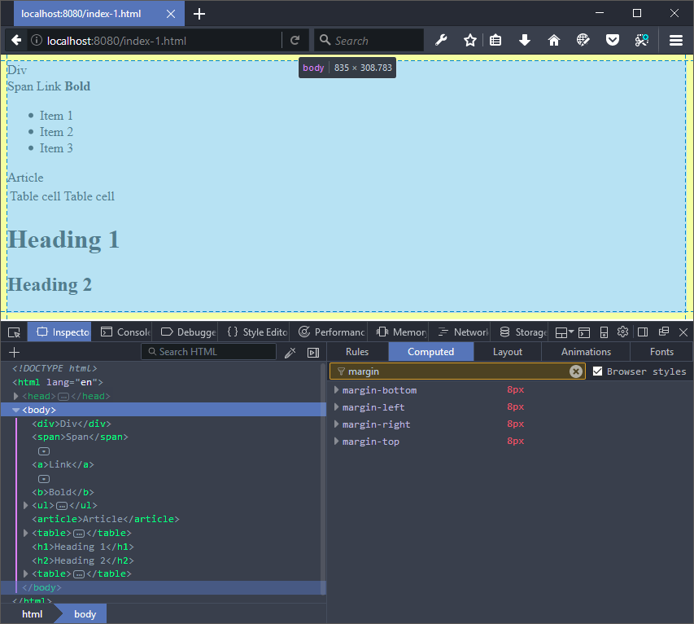
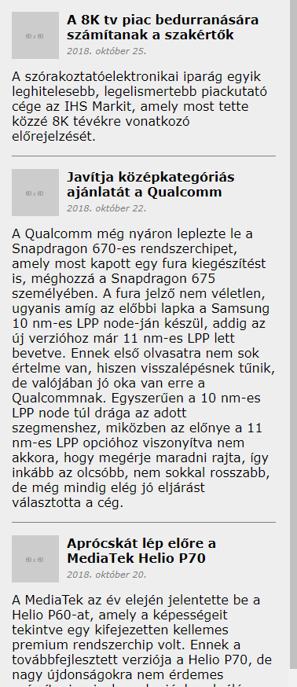

Labor 09 - CSS¶
Bevezetés¶
A laborok során a hallgatók laborvezetői segítséggel, majd önállóan végeznek feladatokat a webes technológiák gyakorlati megismerése érdekében.
A feladatok megoldása során ne felejtsd el követni a feladat beadás folyamatát Github.
Git repository létrehozása és letöltése¶
- Moodle-ben keresd meg a laborhoz tartozó meghívó URL-jét és annak segítségével hozd létre a saját repository-dat.
- Várd meg, míg elkészül a repository, majd checkout-old ki.
- Egyetemi laborokban, ha a checkout során nem kér a rendszer felhasználónevet és jelszót, és nem sikerül a checkout, akkor valószínűleg a gépen korábban megjegyzett felhasználónévvel próbálkozott a rendszer. Először töröld ki a mentett belépési adatokat (lásd itt), és próbáld újra.
- Hozz létre egy új ágat
megoldasnéven, és ezen az ágon dolgozz. - A neptun.txt fájlba írd bele a Neptun kódodat. A fájlban semmi más ne szerepeljen, csak egyetlen sorban a Neptun kód 6 karaktere.
Feladat 1 - Stíluslapok, inline stílusok¶
Webes HTML tartalmak stílusozására CSS-t használunk. A CSS alapjai:
- szabály (mintaillesztés) alapú, deklaratív programozási nyelv,
- DOM elemekhez megjelenést rendel.
A böngészőben megjelenített HTML tartalmak alapértelmezés szerint formázatlanok, viszont bizonyos szabályokat a böngésző alapértelmezetten illeszt az egyes elemekre, az elem típusa szerint.
Vizsgáljuk meg, milyen szabályokat illeszt a böngésző a HTML, a BODY, a DIV, a SPAN, a H1, H2, az A és a B elemekre!
Nyissuk meg a Visual Studio Code-ban a leklónozott repositorynkat, és dolgozzunk a feladat1-3 mappában lévő index.html-ben.
Szükségünk lesz egy webszerverre, ami ki tudja szolgálni nekünk a fájlokat. Futtassuk az alábbi parancsot a Terminal (Ctrl+ö vagy View > Integrated Terminal) ablakból: http-server
Figyelem!
Ügyeljen rá, hogy a parancsot a megfelelő munkakönyvtárban adja ki, ahol a szerkesztett fájl is található! Ez elindít nekünk egy egyszerű HTTP szervert a gép 8080-as portján (http://localhost:8080/), ahonnan egyszerűen ki tudjuk szolgálni a mappában levő fájlokat, ill. index.html fájl hiányában egy fájllistázó főoldalt kapunk.
Navigáljunk a http://localhost:8080/ URL-re a böngészőben! Nyissuk meg az itt látható index.html fájlt! Az alábbit kell látnunk:

Vegyük észre, hogy az oldalhoz nem vettünk fel saját stíluslapot, valamilyen formázás mégis érvényesült. Egyes elemek félkövérek, kisebbek-nagyobbak, elrendezésük sorfolytonos vagy tördelt.
Vizsgáljuk meg, milyen szabályok érvényesülnek az egyes elemekre!
Nyissuk meg a böngésző beépített fejlesztői eszközeit (F12)! Lehetőségünk van az elemeket kijelölni (Jobb klikk > Inspect Element), megnézni elhelyezkedésüket a felületen és a DOM szöveges reprezentációjában egyaránt.

Fontos! A böngészők és/vagy bizonyos szerverek túl agresszívan gyorsítótárazhatnak bizonyos fájlokat, pl. a HTML és CSS fájljainkat, így a változásokat nem biztos, hogy látni fogjuk egyszerű újratöltés után. Ha ez előfordul, a cache letiltásához a Developer Tools eszköztáron ki kell kapcsolnunk a cache-t.
Jellemzően a menüsor bal oldalán találhatók a kijelöléshez szükséges műveletek ikonjai, jobb oldalon a részletes nézet.
A kiválasztott elemhez a jobb oldali Computed fülön a ténylegesen érvényre lépett szabályokat láthatjuk. Mivel nincs explicit CSS fájlunk linkelve és CSS szabályokat sem írtunk a HTML-ben, ezért kizárólag a böngésző beépített user agent stylesheet-je érvényesül. Itt láthatjuk a CSS Box model**t is, ami az elem **tartalma, a hozzá tartozó padding, border és margin értékek egymásra halmozását jelenti a 2 dimenziós téglalap oldalaihoz mérten.
A CSS feloldásában a cascading, azaz "egymásba ágyazható" rész szerint több stíluslap létezik a származás szempontjából; mi most a böngészőbe beépített, ún. user agent stylesheet-et látjuk.
A user agent stylesheet alapértelmezetten nem biztos, hogy látható a felületen, a Computed fülön van lehetőségünk ezek megtekintését bekapcsolni ("Browser styles"/"Show all" stb. lehetőségek):

A fenti szűrőt használva van lehetőségünk az alkalmazott CSS szabályok között keresni is.
A h1, h2 és b elemek alapértelmezetten félkövérek, ezt a font-weight: 700; tulajdonság írja le nekünk.
A html, body, div, h1, h2 elemek display tulajdonsága block, a span, a és b elemek pedig inline típusúak. A display: block; tulajdonságú elemek egy blokkot (sort) foglalnak el az őket befoglaló elemben, az inline típusúak sorfolytonosak (egymás mellett is elhelyezkedhetnek).
Láthatjuk, hogy a body elemen található 8px margó (margin) mind a 4 irányban:

BEADANDÓ (0.5 pont)
Egy-egy képernyőképpel alátámasztva demonstrálja az alábbi kérdéseket:
- Mekkora a margin, padding és border értéke az
<ul>elemnek?f1.1.png - Hány pixel a (függőleges) távolság a
<h1>és<h2>elemek tartalma között (ügyelve az átfedő margókra)?f1.2.png
Emlékeztető a CSS szabályok definiálásához
Saját CSS szabályokat többféle módon tudunk az oldalunkhoz rendelni:
- CSS fájlokra történő hivatkozással,
- CSS szabályok felvételével a HTML tartalmán belüli
<style>tagben, - inline, a HTML elemek
styleattribútumának beállításával.
Ütköző CSS szabályok közül az érvényesül, amelynek nagyobb a specificitása (megegyező specificitás esetében az utoljára definiált).
Emlékeztetőként a szabályok specificitási sorrendje:
- inline stílus (
<div style="...">), - ID-k száma (
#azonosito), - osztályok, attribútumok és pszeudo-osztályok száma (
.osztaly,[attributum],[attributum="ertek"],:hover), - pszeudo-elemek (
:before,:after).
A sorrendhez hozzátartozik az !important kulcsszó, ami önmagában a fentiektől specifikusabb, viszont az !important szabályokra a fenti specificitási sorrend szintén érvényesül.
A szabályok definiálása:


Módosítsuk az oldal megjelenését futási időben!
- Rejtsük el a böngésző beépített stílusait, és láthatjuk, hogy kizárólag az üres inline stílus illeszkedik így az elemre. Itt hozzá tudunk adni új inline stílust az elemhez.
- Ha új szabályt akarunk felvenni, akkor a kapcsos zárójelek közé kattintva tehetjük ezt meg, ezután az automatikus kiegészítés funkcióval láthatjuk az összes, a böngésző által ismert CSS tulajdonságot (Firefox Developerben ezt az üres kurzoron a **fel-le nyilak**kal tehetjük meg, Edge-ben és Chrome-ban a **Ctrl+szóköz**zel).
-
Vegyük fel a
<h1>elemhez az alábbi CSS tulajdonságot:color: red; -
Közben vegyük észre a DOM reprezentációban, hogy bár a jobb oldali panelen szerkesztünk, pontosan ugyanaz történik, mintha a HTML elem
styleattribútumát adtuk volna meg. - Ha beállítjuk a
font-weight: bold;tulajdonságot a<body>-n, akkor láthatjuk, hogy az összes gyermekére is érvényesül a szabály. Bizonyos szabályok öröklődnek (afont-weightilyen), mások (például apaddingésmargin) viszont nem.
Lehetőség van esetenként több szabály aggregált megadására is ún. shorthandek használatával. Gyakori például a 4-irányú értékadás, ami a top-right-bottom-left iránysorrend szerint ad meg több értéket.
- A
padding: 50px 30px 10px 5px;szabály mind a négy értéket beállítja a fenti sorrend szerint. - A
padding: 10% 1mm;szabály a fenti-lenti értékeket 10%-ra, a jobb-balt 1 mm-re (a padding-top).- A százalékos értékek a szülő elem szélességéhez viszonyítottak (ha
padding-top-ot vagymargin-bottom-ot adunk meg, akkor is szélességhez).
- A százalékos értékek a szülő elem szélességéhez viszonyítottak (ha
- A
padding: 0;mind a 4 oldalon 0-ra állítja a paddingot (nem szükséges mértékegység 0 esetén).
Inline stílusok
Inline stílusokat csak kivételes esetekben használjunk, jellemzően programozottan (JavaScriptből) elfogadott lehet egy elem megjelenését ilyen módon állítani, de a nyers HTML-ben nem!
Feladat 2. - CSS¶
Az oldalhoz alapvetően kétféle módon van lehetőségünk stíluslapot rendelni: külső CSS fájlból vagy az oldalban definiált <style> tagben.
Az index.html forráskódját egészítsük ki, a <head> elembe helyezzük el az alábbi kódot:
<style>
ul {
list-style: none;
padding: 0;
}
ul > li {
float: left;
padding: 10px;
min-width: 200px;
border: 1px solid grey;
}
</style>
Ha frissítjük az oldalt (nem szükséges újraindítani a szervert, csak menteni a fájlt), akkor az elrendezés módosul: a listánkban a listaelemek egymás mellé kerülnek, és a listaelemet jelző pötty eltűnik.
float: left
A float: left; tulajdonság állításával nem ugyanazt érjük el, mintha a listaelemet display: inline-block;-ra állítanánk, mert az inline-block megtartja az egymást követő elemek közötti whitespace-eket, a float: left; viszont nem.
A float segítségével komplexebb elrendezéseket is el tudunk érni, viszont a float-olást meg kell tudnunk szüntetni. Ehhez a clear: both; értéket állíthatjuk be egy elemen. A float-olás azon kevés CSS tulajdonság egyike, ami az elemet sorban követő további testvérekre is közvetlenül hat.
Az alábbi szabályt használhatjuk a float-olás megszüntetéséhez, ekkor az <article> elemre a clearfix osztályt alkalmazva az már új sorba is kerül.
.clearfix {
clear: both;
}
<article class="clearfix">
<!-- ... -->
</article>
A CSS szabályainknak az esetek nagy többségében nem tesz jót, ha túl általánosak. A fenti szabályok minden listaelemre általánosan illeszkedni fognak, ami ebben a konkrét esetben nem jó döntés, ugyanis valahol az oldal törzsében lehet, hogy szeretnénk használni a "klasszikus" listás megjelenítést is. Ezért a szabályunkat át kell gondolnunk, specifikusabb szabályt érdemes írni:
ul.menu {
list-style: none;
padding: 0;
}
ul.menu > li {
float: left;
padding: 10px;
min-width: 200px;
border: 1px solid grey;
}
A fenti osztállyal megkülönböztettük a menu osztállyal ellátott ul elemeket azoktól, amiken nincs rajta az osztály.
A pszeudoosztályok használatával az elemek különböző állapotainak különböző stílust tudunk adni. Ha a listaelemek kijelölése a felhasználó számára speciális állapot, ezt érdemes jeleznünk a felületen. Használjuk az alábbi szabályt:
ul.menu > li:focus {
font-weight: bold;
color: #44AA44;
}
Önmagában a focus pszeudoosztály használata nem elegendő, ugyanis a li elem nem fókuszálható. A <li> elemen elhelyezett tabindex attribútum jelzi a böngészőnek, hogy az elem képes fókuszt kapni:
<ul class="menu">
<li tabindex="1">Item 1</li>
<li tabindex="2">Item 2</li>
<li tabindex="3">Item 3</li>
</ul>
Ezután lehetséges az egér kattintással vagy a Tab billentyű használatával kijelölni az elemet.
A HTML-be ágyazott CSS-sel a probléma, hogy ugyanaz a stílus nem újrahasznosítható a különböző oldalaink között. Ezért érdemes kiszervezni a CSS tartalmainkat a saját dedikált CSS fájljainkba. A CSS tartalmát mozgassuk át a HTML <head> részéből egy új fájlba az index.html mellett, legyen a neve index.css.
A fájlt a HTML-ből az alábbi módon tudjuk linkelni: tegyük az oldal <head> részébe (a korábbi oldalon belüli stílus-definíciók helyére) az alábbi hivatkozást:
<link rel="stylesheet" type="text/css" href="index.css">
BEADANDÓ (0.5 pont)
Képernyőképpel demonstrálja, hogy:
- Az index.html letöltődését követően az index.css fájl is letöltődik. (
f2.1.png) - Az
<ul>lista elemei egymás mellett helyezkednek el. (f2.2.png) Ehhez a HTML-t módosítani szükséges és commitolni. - Az egyik listaelem kijelölt állapotában a betűszín zöld lesz, a karakterek félkövérek. (
f2.3.png)
Feladat 3 - Reszponzív elrendezés¶
A weboldalakat különböző képernyőméretű és felbontású eszközökről szoktuk látogatni. A túl részletes táblázatok, hosszú, meg nem törő sorok nem felhasználóbarátak kisebb méretű kijelzőkön, még ha az eszköz felbontása kellően nagy is. A mobil eszközök ezért szorzókat alkalmaznak a valós és a hasznos felbontás közötti megkülönböztetésképpen.
A reszponzív elrendezés során a legfontosabb koncepciók közé tartozik a szélesség függvényében történő átméretezése az oldalnak. Ezeket az alábbi szintaxis alapján, ún. media query-vel tudjuk implementálni:
.medium-only {
display: none;
}
@media (min-width: 768px) and (max-width: 991px) {
.medium-only {
display: block;
}
}
A fenti szabály 768 és 991 pixel közötti szélességű viewport-on jelenik meg, tehát nem a képernyő mérete, hanem a rendelkezésre álló hely függvényében változik (pl. ablak átméretezésekor is). A medium-only osztállyal ellátott elemek csak ilyen képernyőméreten jelennek meg, ugyanis a media query szabály specifikusabb, mint az azon kívül definiált.
Próbáljuk ki, mi történik, hogyha a két szabály sorrendjét felcseréljük!
BEADANDÓ (0.5 pont)
Képernyőképekkel demonstrálja, hogy a fenti szabályt tetszőleges elemekre alkalmazva azok az ablak méretének függvényében láthatók vagy el vannak rejtve! (f3.1.png, f3.2.png)
Feladat 4 (önálló) - CSS egy komplexebb feladatban (3.5 pont)¶
Mostantól a Feladat4 mappában lévő állományokkal dolgozzon.
Készítse el a kiinduló HTML oldal designját, mely megközelíti a lenti képeken látható elrendezést és megjelenést! Figyeljen rá, hogy a megvalósítás során nem alkalmazhat inline stílusokat, és kerülje a HTML fájl módosítását.


Fejléc (1 pont)¶
A fejléc megjelenését a navbar.css fájlba készítse el, amit először létre kell hozni. (A HTML oldal már hivatkozik rá.)

Az oldalon fix fejléc található (tehát a fejléc nem tűnik el, ha kigörgetünk a tartalomból).
- Ügyeljen rá, hogy a fejléc ne takarja ki az oldal központi tartalmát! (Tipp:
padding) - A fejléc magassága 60px és a háttere bordó!
A logó mellett egy 2 elemből álló menüsor található, ahol az elemek átnavigálnak rendre az index.html és contact.html oldalakra az aktuális oldalról, megnevezésük: Főoldal, Kapcsolat (ezeket az oldalakat nem kell elkészítenie)!
- A menüsort
<ul>és<li>elemek használatával strukturálja. (Tipp:display: inline-block) - A menüpontok betűmérete 1.1em legyen, előtérszíne fehér. Az egeret a menüpontra helyezve (Tipp:
:hoverpszeudoclass) a háttérszín valamelyest * tétebbé válik. - A menüpontok szövege legyen függőlegesen középre igazítva. (Tipp:
line-height) - A fejlécben jobbra igazítva található egy Bejelentkezés gomb (Tipp:
float). - Ügyeljen rá, hogy görgetéskor a tartalom ne takarja ki a menüsort! (Tipp:
z-index)
BEADANDÓ (1 pont)
Demonstrálja képernyőképpel a megoldást! f4.1.png
Fő hír megjelenítése (1 pont)¶
A fő hír megjelenését a news.css fájlba készítse el, amit először létre kell hozni. (A HTML oldal már hivatkozik rá.)

A kezdőoldalon a legfrissebb hír jelenik meg.
- A hírnek van egy fejléce amiben megtalálható a cím, szerző, szerző profil képe, publikálási dátum. Ezeket a csatolt képernyőkép alapján rendezze és formázza!
- A szerző profil képe 80px x 80px. Ezek mellett jelenik meg a cím, a szerző neve, és a publikálás dátuma.
- A profilkép és a szöveg között legyen 10px távolság.
- A cím, szerző neve és publikálás dátumánál úgy állítsa át a betűméretet és a margókat, hogy azok olyan magasak legyenek mint a kép.
- A hír törzse egy bevezető, kép majd további tartalomból áll.
- A hírhez tartozó kép legyen középre igazítva.
- Ügyeljen arra, hogy a szövegek tartsanak egységesen 16px távolságot a befoglaló elemektől. (Tipp:
padding)
BEADANDÓ (1 pont)
Demonstrálja képernyőképpel a megoldást! f4.2.png
Oldalsó sáv (1 pont)¶
Az oldalsó sáv megjelenítését is a news.css fájlba készítse el.

- Az oldal alján található korábbi híreket rendezze úgy, hogy a fő hír jobb oldalán jelenjenek meg
- Az oldalsáv szélessége fixen 350px legyen, a fő hír pedig a fennmaradó helyet töltse ki (Tipp:
width: calc(100% - oldalság szélessége - paddingok)) - Az oldalsáv háttérszíne legyen világosszürke.
- Ha a fő hír magasabb mint az oldalsáv, akkor is érjen le az oldalsáv a láblécig. (Tipp:
position: absolute) - Ha az oldalsáv magasabb, akkor pedig jelenjen meg a scrollbar az oldalsávon. (Tipp:
overflow: auto) - Az egyes hírek között legyen egy elválasztó vonal (Tipp:
border-bottom) - Ügyeljen rá, hogy az utolsó hír után viszont már ne legyen elválasztó vonal (Tipp:
:last-child)
- Az oldalsáv szélessége fixen 350px legyen, a fő hír pedig a fennmaradó helyet töltse ki (Tipp:
BEADANDÓ (1 pont)
Demonstrálja képernyőképpel a megoldást! f4.3.png
Reszponzivitás (0.5 pont)¶
Egészítse ki a news.css fájlt úgy, hogy ha 900px-nél kisebbre állítjuk az ablakot, akkor a jobb oldali sáv tűnjön el, és a teljes oldalt a fő hír foglalja el. (Tipp: @media( max-width: 900px ))
Tippek a megoldáshoz:
- Használja a böngésző DOM vizualizáló eszközt, így láthatja, hogy a kijelölt elemre milyen CSS szabályok illeszkednek.
- Ha egy elemnek ki kell töltenie a rendelkezésre álló szélességet, akkor minden ősének a fában ki kell töltenie a rendelkezésre álló szélességet, amíg az szükséges. Pl. a
width: 100%;csak a közvetlen ősre vonatkozik blokkszintű elemeknél, ha azposition: relativevagy nincs beállítva. - Az elrendezésnél érdemes figyelembe venni, hogy a
position: absolute;érték a DOM-ban az elemhez legközelebbi olyan őshöz pozícionál, melyposition: relative;. Ezután atop,right,bottoméslefttulajdonságokat tudja beállítani pl. pixel vagy százalék érték alapján, így az adott őshöz pozícionálja az elemet. - Használhatja a
calc()függvényt, mely egyszerű konstans értékek számítására használható, pl.width: calc(50% - 100px);. Fontos, hogy a számítandó értékek között mindenképpen szükséges szóközt tennie. @mediaquery-ket azandés azorlogikai operátorokkal tud egymás után fűzni, pl.@media screen and (min-width: 200px) {...}, negálni anotkulcsszóval lehetséges.
BEADANDÓ (0.5 pont)
Demonstrálja képernyőképpel a megoldást! f4.4.png